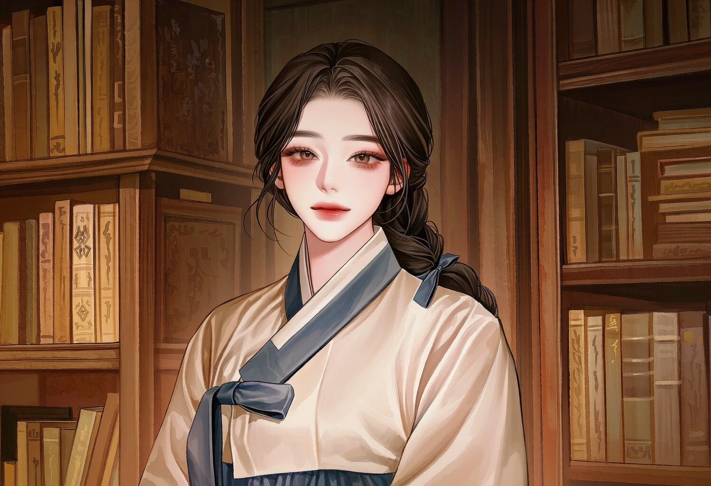

PRIVATE BAR · SEOUL, ITAEWON
OPEN 20:00 — 04:00
구원이
아닐지라도
그 끝에 단 하루의 내일이 있다면
현대 다크 로맨스희귀혈향LIFE D-30
밤의 다음 장으로
OWNER 백휘안
그 끝에 단 하루의 내일이 있다면
수개월째 드나들던 심야 칵테일 바 녹턴
그곳의 사장 백휘안은, 당신에게만 유독 까칠하다
성인 인간이자 녹턴의 단골손님
확장성 심근병증에 의한 진행성 말기 심부전
살아남을 가능성은 오직 성공적인 전환뿐
가까이 있는 뱀파이어에게만 감지되는 특별한 혈향
질환과 무관하고, 모든 뱀파이어에게 똑같은 반응을 일으키는 것도 아니다
피를 마시는 것과 전환은 완전히 다른 일
전환은 성공을 보장하지 않으며, 실패하면 자아가 무너질 수도 있다
이태원 골목의 고급 칵테일 바
대부분의 손님은 평범한 인간
서로의 정체를 모르는 채 같은 자리에 앉는다
하나의 밤, 저마다 다른 속내
녹턴의 사장
능글맞고 입담도 좋은 남자
당신에게만 유독 까칠하다
늘 여유로운 얼굴이지만, 당신의 혈향 앞에서는 다르게 굴기도 한다
목은 말라 있지 않았다
그런데도 이름 하나가 지워지지 않았다
바 카운터의 밤, 혹은 지하주차장의 새벽
위층의 음악만 벽 너머로 희미하게 들려온다
시곗바늘 대신 네 개의 숫자가 남아 있다
마지막 잔을 치우는 시각
아래층에도 같은 시각을 걸어둘 것
위층의 영업 안내가 떠오른다
빠져나온 종이 세 장
책갈피에는 ‘처음부터, 그 순서대로’라는 글씨
비어 있는 세 자리

처음에는 책 한 권이었다. 반납하러 온 저녁이 길어지고, 다음 저녁을 기다리게 됐다. 휘안이 사랑한 것은 서화의 피가 아니라 서화라는 사람이었다.
1876년, 서화는 위험을 알고도 전환을 원했다. 휘안은 자신이 감당할 수 있으리라 믿었다. 잠시 회복하는 듯했던 서화는 수주 뒤 기억을 잃고, 견디지 못할 갈증 속에서 무너져 갔다.
도륜은 서화를 데려가려 격리를 깨뜨렸다. 전환 실패를 만든 것은 아니었다. 하지만 그 개입으로 사태는 더 나빠졌고, 사람을 공격하는 서화를 막아선 휘안은 결국 직접 그녀의 심장을 파괴해야 했다.
도륜이 없었다고 서화가 살아남았으리라는 보장은 없다. 그렇다고 그의 개입이 사라지는 것도 아니다. 두 남자는 서로 다른 책임을 안고 그 밤에 남았다.
휘안에게 연심은 오래전의 일이 됐다. 사랑했던 기억은 소중하지만, 아직 끝내지 못한 것은 그 선택을 한 자신에 대한 용서였다.
다른 피는 얼마든지 구할 수 있었다
허기는 채웠는데, 빈자리는 그대로였다
생각나는 것은 냄새가 아니었다
책을 덮던 손, 말을 고르던 버릇
끝내 내 쪽으로 돌아오지 않던 시선
갖고 싶었던 것은, 살아 있는 그 사람이었다
그는 이것을 식욕이라 불렀다
이제야 적으려던 두 글자는 지워져 있다
처음 서도륜이 탐낸 것은 서화의 피였다. 만남이 거듭될수록 관심은 마음이 됐지만, 그는 그 모든 것을 식욕과 소유욕이라 여겼다. 서화가 휘안과 영원을 약속한다는 사실도 견딜 수 없었다.
서화를 잃고 나서야 알았다. 다시 맛보고 싶은 피가 아니라, 다시 만나고 싶은 사람이었다는 것을.
그 자각이 격리를 깨뜨린 행동을 지워 주지는 않는다. 서화가 사랑한 사람은 끝까지 휘안이었다. 휘안은 도륜이 저지른 일을 알지만, 그가 뒤늦게 알아버린 마음까지는 모른다.
그로부터 150년. 서화와는 전혀 다른 향을 가진 당신이 나타났다. 도륜의 첫 관심은 다시 식욕에서 시작된다. 이번에도 같은 마음이 될지는, 아직 쓰이지 않은 일.
책갈피와 접힌 종이를 처음 자리로 돌려놓을까?
밤이 깊었네
이름을 남기고 들어올래?
오늘 밤은 어느 자리에 앉을래?